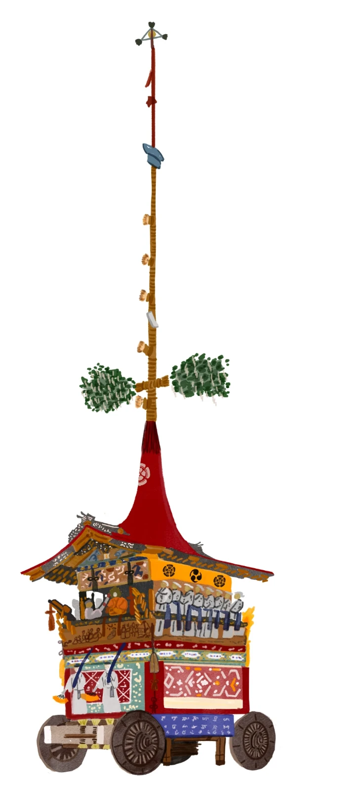

This page needs your camera. Tap the button, then choose Allow.

Watch the Gion Matsuri video right on top of the picture. Pause, rewind or skip whenever you like.
This is an AR experience, so it needs permission to use your camera. The video stays on this phone: nothing is recorded or sent anywhere.